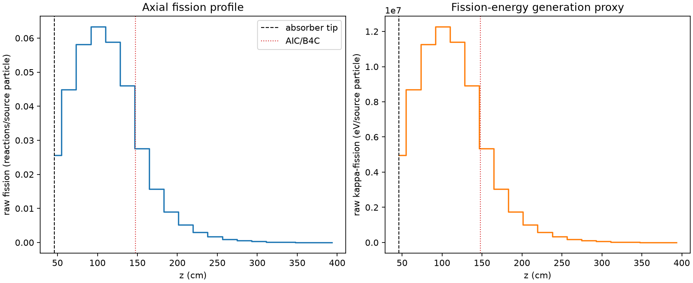
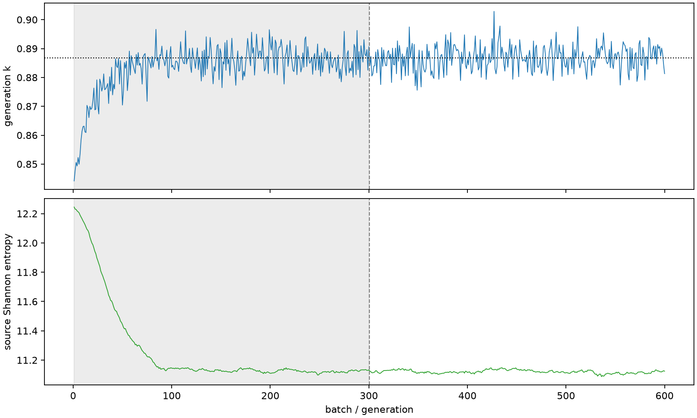

| field | value |
|---|---|
| experiment | V2-STAGE_256_OGRENCI_01-0024 |
| k | 0.8868194609354786 |
| MC standard error | 0.00017471295792064698 |
| seconds | 956.8854085629864 |
| acceptance | not_assessed |
| convergence | review_required |
Completed is output integrity only; physical and statistical review required. Zero tallies do not prove zero production or zero uncertainty.
| diagnostic | value |
|---|---|
| geometric fuel voxels | 5280 |
| zero fission tally voxels | 0 |
| low signal fuel voxels | 829 |
| low signal fission share | 0.0002327025229805057 |
| low signal kappa share | 0.00023274722132382933 |
| important fission share | 0.9500401995641772 |
| previous filter included | 4451 |
| duration estimate s | 1562.5173488400023 |
| actual minus estimate s | -605.6319402770159 |
| fission relative MC error | statistics |
|---|---|
| all_geometric_fuel | {"voxels": 5280, "positive_mean_voxels": 5280, "zero_mean_voxels": 0, "undefined_relative_error_voxels": 0, "median": 0.026851921007661223, "p95": 0.38648262411303874, "maximum": 0.8189099373477924} |
| low_signal | {"voxels": 829, "positive_mean_voxels": 829, "zero_mean_voxels": 0, "undefined_relative_error_voxels": 0, "median": 0.32114322335493184, "p95": 0.5916784983346932, "maximum": 0.8189099373477924} |
| important_95pct | {"voxels": 2186, "positive_mean_voxels": 2186, "zero_mean_voxels": 0, "undefined_relative_error_voxels": 0, "median": 0.008100298781606084, "p95": 0.01436085478957946, "maximum": 0.019877267616540895} |
| outside_previous_filter | {"voxels": 829, "positive_mean_voxels": 829, "zero_mean_voxels": 0, "undefined_relative_error_voxels": 0, "median": 0.32114322335493184, "p95": 0.5916784983346932, "maximum": 0.8189099373477924} |
| kappa_fission relative MC error | statistics |
|---|---|
| all_geometric_fuel | {"voxels": 5280, "positive_mean_voxels": 5280, "zero_mean_voxels": 0, "undefined_relative_error_voxels": 0, "median": 0.02680640649376003, "p95": 0.3858118877894629, "maximum": 0.8179861032637482} |
| low_signal | {"voxels": 829, "positive_mean_voxels": 829, "zero_mean_voxels": 0, "undefined_relative_error_voxels": 0, "median": 0.3206692216618176, "p95": 0.5895288757667471, "maximum": 0.8179861032637482} |
| important_95pct | {"voxels": 2186, "positive_mean_voxels": 2186, "zero_mean_voxels": 0, "undefined_relative_error_voxels": 0, "median": 0.0080873063325647, "p95": 0.014340456982311924, "maximum": 0.019851114813087937} |
| outside_previous_filter | {"voxels": 829, "positive_mean_voxels": 829, "zero_mean_voxels": 0, "undefined_relative_error_voxels": 0, "median": 0.3206692216618176, "p95": 0.5895288757667471, "maximum": 0.8179861032637482} |
| axial bin | fission share | kappa-fission share |
|---|---|---|
| 1 | 0.07087802503602038 | 0.07087320213868761 |
| 2 | 0.12414777350398463 | 0.12414628328624623 |
| 3 | 0.16116977638457142 | 0.16116771919076425 |
| 4 | 0.1752775506681797 | 0.1752750090814831 |
| 5 | 0.16302638078401088 | 0.16302413586922807 |
| 6 | 0.12755509909778728 | 0.1275537523735847 |
| 7 | 0.07623177779355725 | 0.07623712699779002 |
| 8 | 0.043339051218410814 | 0.0433429476843086 |
| 9 | 0.025006247953348167 | 0.02500839500826328 |
| 10 | 0.014483706051964536 | 0.01448499309933054 |
| 11 | 0.008291712767839934 | 0.008292584710974387 |
| 12 | 0.00469591891292049 | 0.004696324912506574 |
| 13 | 0.002643305708340505 | 0.0026435772178474977 |
| 14 | 0.0014944145022479517 | 0.0014945215050920688 |
| 15 | 0.0008574111497769964 | 0.0008574796126711114 |
| 16 | 0.00046687381811719685 | 0.00046690502619019204 |
| 17 | 0.0002394219286670989 | 0.00023944882135677138 |
| 18 | 0.00011728767954746931 | 0.00011730459625369936 |
| 19 | 5.572009703838125e-05 | 5.573683810313269e-05 |
| 20 | 2.254494366882935e-05 | 2.2552029318039838e-05 |
Histories include the inactive-to-active transition at batch 300. kappa-fission approximates fission energy production, not total heat deposition.

